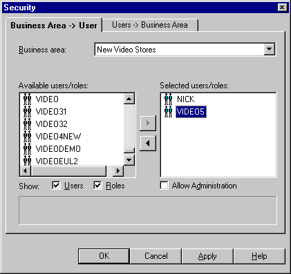
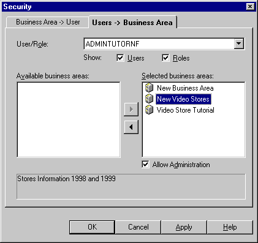
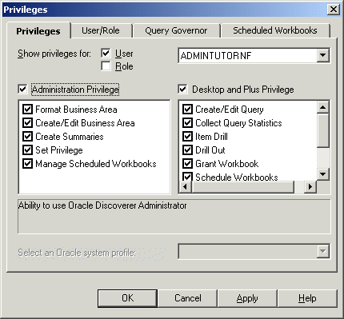
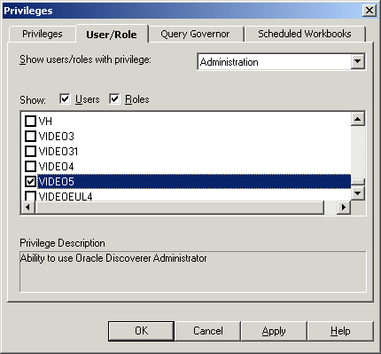
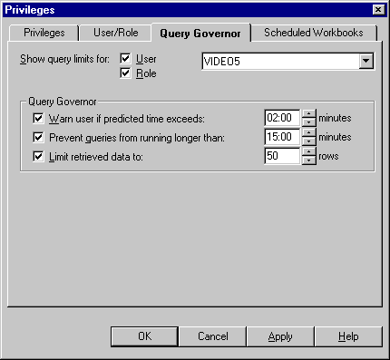
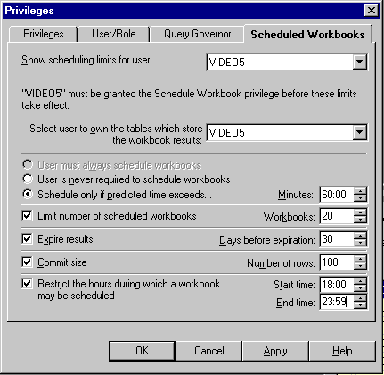

6
Controlling access to information
Controlling access to information
This chapter explains how to control access to information using Discoverer Administrator, and contains the following topics:
About Discoverer and security
As a Discoverer manager, it is your responsibility to control the information that users can access and what they can do with that information. You use Discoverer access permissions and task privileges as follows:
- you use Discoverer access permissions to control who can see and use the data in business areas
- you use Discoverer task privileges to control the tasks each user is allowed to perform
You can grant Discoverer access permissions and task privileges to database roles as well as to database users. When you grant access permissions or task privileges to a role, all users with that role have the role's access permissions and task privileges. If you are running Discoverer Administrator in Oracle Applications mode, you grant access permissions or task privileges to Oracle Applications Responsibilities instead of roles. For more information about Oracle Applications mode, see Chapter 16, "What features does Discoverer support for Oracle Applications users?".
The access permissions and task privileges that you grant in Discoverer Administrator only apply to Discoverer's business areas and not to the underlying database tables. Data access rights to the database tables remain under the control of the database administrator.
Regardless of the access permissions and task privileges that you set in Discoverer Administrator, a Discoverer end user only sees folders if that user has been granted the following database privileges (either directly or through a database role):
- SELECT privilege on all the underlying tables used in the folder
- EXECUTE privilege on any PL/SQL functions used in the folder
You can enable a user to perform administrative tasks (e.g. the creation of folders, calculations, conditions, hierarchies, summaries) in a business area by granting that user Administration privilege on the business area. A user with the Administration privilege on a particular business area can also grant Administration privilege on that business area to other users. Note that although you can devolve business area administration to multiple users, it is often easier to maintain control with a single administrator for each business area.
About Discoverer access permissions
Discoverer access permissions enable you to control who can see and use the data in business areas.
You control access to business areas in two ways:
Before Discoverer end users see folders in a business area, Discoverer confirms that the user has database access to the tables referenced by the folders. If the user does not have access to a table referenced by a folder, Discoverer does not display the folder. You can override this behavior (e.g. to improve performance where access privileges rarely change) by changing the value of the ObjectsAlwaysAccessible registry setting (for more information, see Chapter 20, "Discoverer registry settings").
About Discoverer task privileges
Discoverer task privileges enable you to control the tasks each user is allowed to perform.
You use task privileges to specify whether a Discoverer end user is able to:
- create new worksheets or edit existing ones (without this option, a user only has the ability to run predefined worksheets)
- use item drills, drill to related items, and drill from summary to detail items
- drill out to launch other applications
- grant access to workbooks to other users
- create and edit scheduled workbooks
- save workbooks to the database
- collect query performance statistics
You also use task privileges to specify whether a user of Discoverer Administrator is able to:
- edit only the formatting information in an existing business area
- create new business areas and edit existing ones
- create summary tables
- grant and revoke EUL privileges
- maintain the scheduled workbooks of end users
How to specify a user or role (responsibility) that can access a business area
Note: When Oracle Applications database users are connected, Discoverer displays responsibilities instead of roles.
To specify the users or roles that can access a specific business area:
- Choose Tools | Security and display the "Security dialog: Business Area - > User tab".
Figure 6-1 Security dialog: Business Area->User tab

Text description of the illustration secba2us.gif
- Select the business area to which you want to grant access from the Business area drop down list.
- Specify the content of the Available users/roles list by selecting the Users check box and/or the Roles check box as appropriate.
- Move the users or roles that you want to have access to the selected business area from the Available users/roles list to the Selected users/roles list.
You can select more than one user or role by pressing the Ctrl key and clicking another user or role.
- For each new user or role you add to the Selected users/roles list, follow the instructions below to specify whether they have administration access to the business area:
- Click the user or role in the Selected users/roles list.
- Select or clear the Allow Administration check box as required.
The setting of a user's Allow Administration privilege controls which administration tasks the user can perform. For more information, see "How to specify the tasks a user or role (responsibility) can perform".
- Click OK to save the changes you have made and close the Security dialog.
Notes
- To remove access to a business area from a user or role, move the user or role from the Selected users/roles list to the Available users/roles list.
- The Available users/roles list includes a role called PUBLIC. Select this role to view or edit the default access permissions for users or roles whose permissions you have not yet defined.
- If you are running Discoverer Administrator as an Oracle Applications user, the Security dialog shows Oracle Applications Responsibilities instead of roles. For more information about Applications mode, see Chapter 16, "What features does Discoverer support for Oracle Applications users?".
How to specify the business areas a user or role (responsibility) can access
Note: When Oracle Applications database users are connected, Discoverer displays responsibilities instead of roles.
To specify the business areas that a user or role can access:
- Choose Tools | Security and display the "Security dialog: Users - > Business Area tab".
Figure 6-2 Security dialog: Users-> Business Area tab

Text description of the illustration secusr2b.gif
- Specify the content of the User/Role drop down list by selecting the Users check box and/or the Roles check box as appropriate.
- Select the user or role to which you want to grant access from the User/Role drop down list.
- Move the business areas that you want the selected user or role to have access to from the Available business areas list to the Selected business areas list.
You can select more than one business area by pressing the Ctrl key and clicking another business area.
- For each new business area you add to the Selected business areas list, follow the instructions below to specify whether the selected user or role has administration access to the business area:
- Click the business area in the Selected business areas list.
- Select or clear the Allow Administration check box as required.
The setting of a user's Allow Administration privilege controls which administration tasks the user can perform. For more information, see "How to specify the tasks a user or role (responsibility) can perform".
- Click OK to save the changes you have made and close the Security dialog.
Notes
- To remove access to a business area from a user or role, move the business area from the Selected business areas list to the Available business areas list.
- The Users/Roles drop down list includes a role called PUBLIC. Select this role to view or edit the default access permissions for users or roles whose permissions you have not yet defined.
- If you are running Discoverer Administrator as an Oracle Applications user, the Security dialog shows Oracle Applications Responsibilities instead of roles. For more information about Applications mode, see Chapter 16, "What features does Discoverer support for Oracle Applications users?".
How to specify the tasks a user or role (responsibility) can perform
Note: When Oracle Applications database users are connected, Discoverer displays responsibilities instead of roles.
To specify the tasks a user or role can perform:
- Choose Tools | Privileges and display the "Privileges dialog: Privileges tab".
Figure 6-3 Privileges dialog: Privileges tab

Text description of the illustration privlgst.gif
- Specify the content of the User/Role drop down list by selecting the User check box and/or the Role check box as appropriate.
- Choose the user or role whose task privileges you want to change from the User/Role drop down list.
- Grant or revoke specific task privileges for the user or role by selecting or clearing the appropriate check boxes in the Administration Privilege list or the Desktop and Plus Privilege list.
Note: To grant a privilege, you must first grant the parent rpivilege using the Administration Privilege check box or the Desktop and Plus Privilege check box. If a user has access to Discoverer Desktop or Discoverer Plus via a responsibility and you clear the Desktop and Plus check box, any selected check boxes in the list of privileges will still be active (although they appear grayed out). The total privileges for a user are determined by the combination of responsibility and user privileges.
Hint: Click on a privilege in the Administration Privilege list or the Desktop and Plus Privilege lists to see a brief description of that privilege in the area below the lists.
- Choose an Oracle system profile to apply to the user or role from the Apply an Oracle System Profile drop down list (only available if you are using an Oracle database).
Oracle system profiles are created by the database administrator to control access to database resources.
Note: To assign Oracle system profiles within Discoverer Administrator you must have access to the following database views:
- Click OK to save the changes you have made and close the Privileges dialog.
Notes
- The changes you have made will take effect when users re-connect to Discoverer.
- The drop down list for user/role includes a role called PUBLIC. Select this role to view or edit the default task privileges for users or roles whose privileges you have not yet defined.
- If you want to grant Administration privileges to a user or role, you must also grant that user Administration access to the business area. For more information, see "How to specify a user or role (responsibility) to perform a specific task".
- If you are running Discoverer Administrator as an Oracle Applications user, the Privileges dialog shows Oracle Applications Responsibilities instead of roles. For more information about Oracle Applications mode, see Chapter 16, "What features does Discoverer support for Oracle Applications users?".
How to specify a user or role (responsibility) to perform a specific task
Note: When Oracle Applications database users are connected, Discoverer displays responsibilities instead of roles.
To specify the users or roles that can perform a specific task:
- Choose Tools | Privileges and display the "Privileges dialog: User/Role tab".
Figure 6-4 Privileges dialog: User/Role tab

Text description of the illustration usroleta.gif
- Select the task privilege that you want to grant to (or revoke from) users or roles from the drop down list.
When you select a privilege from the drop down list, a brief description of the privilege appears on the lower area of the dialog.
- Specify the content of the Users/Roles list by selecting the Users check box and/or the Roles check box as appropriate.
The content of the Users/Roles list is sorted alphabetically. If you include both users and roles, users appear first.
- Grant or revoke privileges for the currently selected task by selecting or clearing the appropriate check boxes in the Users/Roles list.
- Click OK to save the changes you have made and close the Privileges dialog.
Notes
How to set query retrieval limits
You can maintain overall system performance by setting query limits for users and roles.
Note: When Oracle Applications database users are connected, Discoverer displays responsibilities instead of roles.
To set query retrieval limits for a user or role:
- Choose Tools | Privileges and display the "Privileges dialog: Query Governor tab".
Figure 6-5 Privileges dialog: Query Governor tab

Text description of the illustration querygov.gif
- Specify the content of the User/Role drop down list by selecting the User check box and/or the Role check box as appropriate.
The Role check box is only available if you are using an Oracle database.
- Choose the user or role for which you want to specify a query limit from the User/Role drop down list.
- Specify the following Query Governor options as required:
- Click OK to save the changes you have made and close the Privileges dialog.
Notes
How to set scheduled workbook limits
You can control how a Discoverer end user makes use of scheduled workbooks by setting scheduled workbook limits.
To set scheduled workbook limits for a user or role:
- Choose Tools | Privileges and display the "Privileges dialog: Scheduled Workbooks tab".
Figure 6-6 Privileges dialog: Scheduled Workbooks tab

Text description of the illustration schwbktb.gif
- Select the user for which you want to specify scheduled workbook privileges from the Show scheduling limits for user drop down list.
- Select the user to own the result tables created in the database (that contain the results of scheduled workbooks).
The results of scheduled workbooks are stored in database tables. These tables can belong to a different user to the one that originally ran the scheduled workbook.
Note: Oracle Applications users must use the Oracle Applications APPS user as the scheduled workbook results schema in which to store workbook results.
- Specify when you want to force the user to schedule workbooks as follows:
- Set the following scheduled workbook options as required:
- Click OK to save the changes you have made and close the Privileges dialog.
Notes
- You might decide to have a single database user owning the tables containing the results of all users' scheduled workbooks (with the benefit that individual users do not need additional privileges to run scheduled workbooks). Alternatively, you might decide to have a scheduled workbook results schema owning the tables containing the results for each user's scheduled workbooks (with the benefit that space quota is not shared and is therefore less likely to be exhausted than if the tables were owned by a single database user). For more information, see Chapter 7, "Where to store the results of scheduled workbooks?".
How to share Discoverer workbooks using a database role
You might want to share Discoverer workbooks in an End User Layer (EUL) using a database role. For example you might only want database users that have been granted the database role of a manager, to access specific Discoverer workbooks. You can determine the database users that can use specific Discoverer workbooks by associating the database users with a database role, and sharing the Discoverer workbooks with the database role as follows:
- identify an existing database role or create a new database role
- make sure that the database role can select data from the database tables that will be used by your Discoverer workbooks
- grant the database role to the database users, whose workbooks you want to share with the database role
- identify or create the Discoverer workbooks using a database user that has been granted the database role
- share the Discoverer workbooks with the database role
Each database user that is granted the database role will be able to access workbooks that are shared with that database role.
How to share workbooks using a database role:
- Start SQL*Plus (if it is not already running) and connect as the EUL owner.
For example, if SQL*Plus is already running, you might type the following at the command prompt:
SQL> connect jchan/tiger
Where jchan is the EUL owner and tiger is the EUL owner password.
- Create a database role as the EUL owner.
For example, in SQL*Plus you might enter the following SQL statement:
SQL> create role role1;
The above statement creates a database role named role1.
- Grant the SELECT privilege on the appropriate database tables to the database role you just created.
For example, in SQL*Plus you might enter the following SQL statement:
SQL> grant select on product to role1;
SQL> grant select on store to role1;
SQL> grant select on sales_fact to role1;
The above statement grants the select privilege on the product, store and sales_fact tables to the database role role1.
Note: The select privilege must be granted to the role on all the tables that are referenced by items used in Discoverer workbooks.
- Grant the role that you just created to each database user with whom you want to share Discoverer workbooks.
For example, in SQL*Plus you might enter the following SQL statement:
SQL> grant role1 to jchen;
The above statement grants the database role role1 to the database user jchen.
The remaining task steps must be carried out using Discoverer Plus or Discoverer Desktop.
For more information, see the Oracle Application Server Discoverer Plus User's Guide.
- In Discoverer Plus or Discoverer Desktop, connect as the EUL owner and choose File | Manage Workbooks | Sharing to display the Share Workbooks dialog.
- Select the database role that you previously created (e.g. role1).
- Move the workbooks you want to share with the database role role1, from the Available field to the Shared field.
- Click OK to close the dialog and save the changes you made.
The database users that have been granted the database role will now be able to use any Discoverer workbooks that have been shared with the database role.